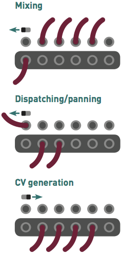
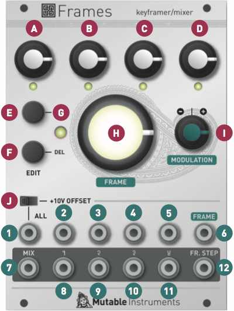
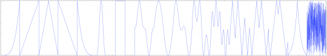

Overview
Keyframing is a computer animation technique in which an animation sequence is created by manually adjusting the position/orientation of characters/props at a few key moments, and letting the computer interpolate the trajectory between them. Mutable Instruments' Frames brings this concept to your modular system, and allows up to 4 signal levels or CVs to be animated in this manner. Frames' input/output architecture is extremely flexible and allows mixing, panning, attenuation and CV generation applications - all with the morphing/interpolation capabilities of a keyframer.
Installation
Frames is designed for Eurorack synthesizer systems and occupies 18 HP of space. It requires a -12V/+12V supply (2x5 connector), consuming 30mA from the -12V rail and 90mA from the +12V rail. The red stripe of the ribbon cable must be oriented on the same side as the "Red stripe" marking on the printed circuit board.
Input / Output architecture
Frames' core is a quadruple VCA, the gains of which are digitally controlled to create animated sequences.
The inputs labelled 1, 2, 3, 4 are directly routed to each of the four VCAs. When no jack is plugged into them, they receive instead the signal from the ALL input. For example, if you connect the output of a VCO into ALL, and the output of a drum module into 4; the VCA 1, 2, and 3 will process the VCO signal, and the VCA 4 will process the drum sound. What happens when no jack is plugged into the ALL input? The VCAs receive no signal... unless the +10V OFFSET switch is pushed. When this switch is pushed, the ALL input receives a constant +10V signal (unless a jack is inserted in!), and this signal is then routed into the 4 inputs (unless a jack is inserted in one of them!).
Once the VCAs have done their work, the 4 attenuated signals are sent to the outputs labelled 1, 2, 3, 4. Unless a jack is inserted in one of these individual outputs, the signal is also sent to the global MIX output. For example, if inputs 1, 2, 3, 4 receive the square, sawtooth, triangle and sine outputs of a VCO; and if a patch cable is connected to output 4, the MIX output will contain a blend of the square, sawtooth and triangle outputs - while the attenuated sine signal will be present on the patch cable plugged into output 4.
To put this into practice, here are some examples of applications:
- Waveform mixing. Patch 4 audio sources into the 1, 2, 3, 4 inputs. Then take the signal from the MIX output.
- Panning. Patch a monophonic audio source into the ALL input. Take the left and right signals from outputs 1 and 2 - and maybe front and back signals from 3 and 4 if you are working in quadraphony!
- Effect or filter routing. Patch a dry audio signal into the ALL input. Send each of the individual outputs to various filters or effect processors, and mix back with a standard mixer module or even a fixed-gain summer (such as Mutable Instruments' Links).
- CV control. Leave all inputs unconnected. Switch on the +10V offset (the +10V constant signal will flow into ALL, and then into all inputs). The outputs 1, 2, 3, 4 can be used as 4 CV sources.
- Mutable Instruments' favorite... Patch the outputs of two instances of Braids (our digital oscillator) into inputs 1 and 2. Switch on the +10V offset. The +10V constant signal will flow into ALL, and then into the unused inputs 3 and 4 - the outputs 3 and 4 are thus CV sources, which can be fed into Braids' TIMBRE inputs. Send the MIX output to a filter or VCA. This configuration allows to simultaneously control the levels of the two oscillators; and their TIMBRE CV.

Controls

The big FRAME knob is used to move through the animation, from the beginning (knob turned fully counter-clockwise) to the end (knob turned fully clockwise). The animation is played as you turn the knob.
The keyframe LED G indicates whether the current position of the FRAME knob stores a keyframe (LED lit) - or whether it is just an intermediate interval between keyframes (LED switched off).
The ADD button creates a keyframe at the current position of the FRAME knob. The DEL button removes the keyframe at the current position of the FRAME knob (if there is no keyframe at the current position of the FRAME knob, nothing happens).
The 4 potentiometers at the top of the module adjust the gains of the 4 channels at the current keyframe. If there is no keyframe at the current position of the FRAME knob, nothing happens - the gains will be interpolated between the previous and next keyframe in the sequence and you do not have control of them.
Frames provides two types of visual feedback. Firstly, every time you create a keyframe it is given a different color, illuminating the FRAME knob and creating intermediate hues as the animation is played. Secondly, the 4 LEDs below the 4 knobs at the top of the module indicate the current value of the gains for the 4 channels.
Creating an animation: walkthrough
In this walkthrough, we will create a sequence blending two waveforms from a VCO. Of course, any other signal source can be used - but throughout this section we will refer to the two input signals as the "square" and "sawtooth" inputs.
We assume that the module has just been powered on for the first time (or reset - see the 'advanced features' section below). After the short animation played when the module starts, The FRAME knob is white and the keyframe indication LED is off - indicating that no keyframe has been created yet.
Switch off the +10V offset. Patch the square output of the VCO into the input 1; and the sawtooth output of the VCO into the input 2. Monitor the MIX output. We will simply ignore channels 3 and 4.
Set the FRAME knob to its minimum position (7 o'clock). We are going to create the first keyframe in the animation. Press the ADD button. Use the 1 and 2 knobs to set the square signal to its maximum level, and the sawtooth signal to its minimum level. Our animation will thus start with the square signal at its maximum level, and the sawtooth signal at its minimum level. Observe that the FRAME knob is illuminated in red (the color of our first keyframe), and that the keyframe indicator is also lit.
Rotate the FRAME knob to its medium position (12 o'clock). We are going to create the second keyframe in the animation. Press the ADD button. Use the 1 and 2 knobs to set the square signal to its minimum level, and the sawtooth signal to its maximum level. The second stage of our animation will thus have the square signal at its minimum level, and the sawtooth signal at its maximum level. This second keyframe is given an orange color.
Rotate the FRAME knob to its final postiion (5 o'clock). Press the ADD button to create the last keyframe in the animation. Use the 1 and 2 knobs to set the square and sawtooth signals to medium levels. This third keyframe is given a yellow color.
You can now rotate the FRAME knob to move back and forth through the animation. As you rotate the FRAME knob you can notice several things:
- The LEDs 1 and 2 (and of course, the mixer gains!) go through the different values that have been programmed: first square wave, fading into sawtooth, and ending with a mix of both.
- The color of the FRAME knob changes from red to yellow.
- Whenever the FRAME knob crosses the 7 o'clock, 12 o'clock or 5 o'clock positions, the KEYFRAME LED lights on to indicate that some settings have been recorded at this position. It is of course possible to modify the 4 gains/levels associated with a keyframe: use the FRAME knob to reach the keyframe - check that the KEYFRAME LED is on; and adjust the 4 gains/levels.
Automatically playing an animation
To automatically play the animation, patch an LFO or envelope into the FRAME CV input; and adjust the direction of the animation with the MODULATION attenuverter. An ascending sawtooth LFO will loop the animation in chronological order (unless the attenuverter is set to a negative amount of course!). Using a triangle LFO will play the animation back and forth. A sequencer can also be used to step through frames without interpolation. Slope generators (such as Mutable Instruments' Tides or Make Noise's Maths/Function) are good tools for generating interesting animation CVs.
The module emits a 1ms long, +5V high pulse on the FR.STEP output whenever the animation crosses a keyframe. This signal can be used to synchronize sequences or rhythms with the animation.
Advanced features
Channel settings
Hold the ADD button for one second to edit the interpolation curve used for each channel. The 4 gain knobs adjust the interpolation curve for each channel. While a knob is turned, the corresponding interpolation curve is visualized through the illumination pattern of the FRAME knob. The 6 available interpolation curves are: step (no interpolation), linear, accelerating, decelerating, smooth departure/arrival (raised cosine), and bouncing. Press the ADD button when you are done.
Hold the DEL button for one second to edit the response curve used for each channel. The 4 gain knobs adjust the response curve, from linear to exponential. While a knob is turned, the corresponding interpolation curve is visualized through the illumination pattern of the FRAME knob.
Clearing/saving settings
Hold the DEL button for five seconds (until the LEDs show an animated pattern) to clear all keyframes and reset the module to its initial state. This will not clear any saved configuration.
Hold the ADD button for five seconds (until the LEDs show an animated pattern) to save the current configuration of the module. This configuration will be restored the next time the module is powered on.
Reference voltage selection
Many digital modules - in particular from Mutable Instruments - use a 0 .. 5V range for CV control. The position of the jumper on the back of the module can be changed to generate CVs in the 0 .. +5V range rather than 0 .. +10V range.
Sequencer mode
Several users requested an alternative method for stepping through keyframes, without interpolation, in sync with a clock, in the manner of a sequencer.
To activate this mode, move the FRAME knob so that it points to an existing keyframe (the KEYFRAME LED must be lit), and press the ADD button 5 times. The current frame is no longer controlled by FRAME knob. Instead, pulses on the FRAME CV input are needed to cycle through frames (make sure that MODULATION is set to its maximum value).
The same procedure can be used to exit the sequencer mode.
And Now for Something Completely Different...
Move the FRAME knob to its minimum position and repeatedly press the DEL button (10 times). The module will provide an entirely different way of controlling the gains/CV levels on the 4 channels, inspired by quadrature oscillators. The same "secret handshake" can be used to exit this special mode and reset the module to standard operation.
To explore this mode, we recommend you to enable the OFFSET, leave all inputs unconnected, and patch the 4 channel outputs to the CV inputs of oscillators or filters...
The FRAME knob - along with the FRAME input and its attenuverter - control the main frequency.
The channel 1 knob controls the waveform - read from a wavetable, with interpolation.

The channel 2 knob controls the difference in wavetable position between each channel. In its default position, at 12 o'clock, all channels play the same waveform. Turn it clockwise or counter-clockwise to cause each channel to read a different waveform from the wavetable.
The channel 3 knob controls the phase or frequency offset between each channel. In its default position, at 12 o'clock, all channels are locked in phase and in frequency. Turn it clockwise to create a phase-shift between channels (until quadrature oscillation is reached); and turn it counter-clockwise to create a frequency shift between channels.
Finally, the channel 4 knob controls a kind of phase-modulation "bleed" between each channel. In its default position, at 12 o'clock, all channels are independent. Turn it clockwise and each channel will be increasingly modulated by the next channel. Turn it counter-clockwise and each channel will be increasingly modulated by the previous channel.
Firmware update procedure
Unplug all CV inputs/outputs from the module. Connect the output of your audio interface/sound card to the FRAME modulation input. Set the MODULATION attenuverter to its maximum value. Power on your modular system with Frames' ADD button pressed. The 4 LEDs will blink, and the central knob will be lit in orange.
Make sure that no additional sound (such as email notification sounds, background music etc.) from your computer will be played during the procedure. Make sure that your speakers/monitors are not connected to your audio interface - the noises emitted during the procedure are aggressive and can harm your hearing. On non-studio audio equipment (for example the line output from a Desktop computer), you might have to turn up the gain to the maximum.
When you are all set, play the firmware update file into the module. The LEDs show a cyclic pattern and periodically flash upon receiving a valid block of data. The central knob is lit in green. The unit reboots after the last packet has been received.
In case the signal level is inadequate or too high, the procedure will stop and all 4 LEDs will blink, with the central frame knob illuminated in red. Try adjusting the output level, press the ADD button and retry from the start of the update file.